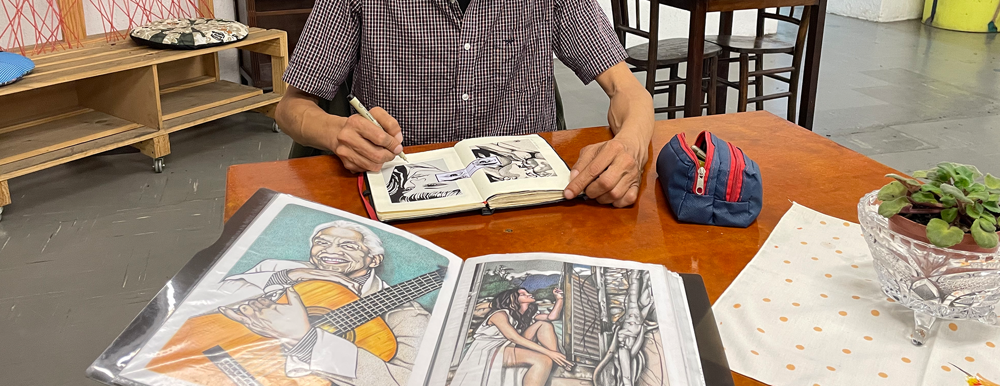
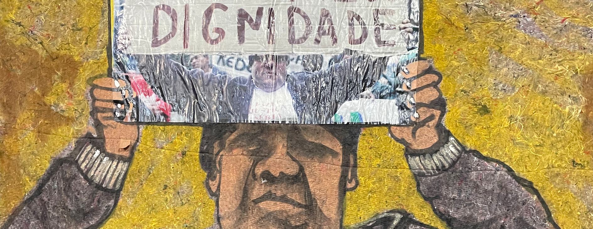
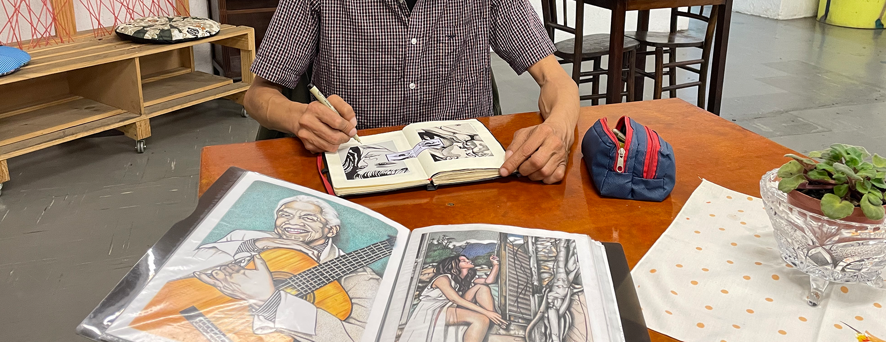
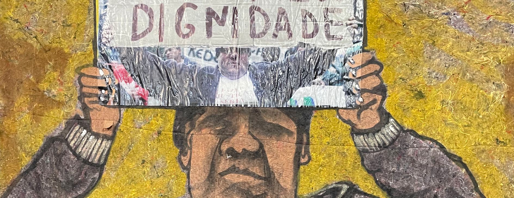
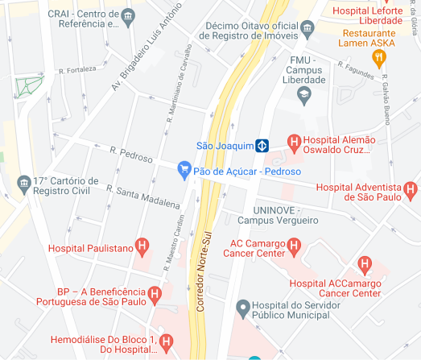

O CISARTE é uma associação comunitária sócio cultural, sem fins lucrativos fundada em 2016 no Viaduto Pedroso 111, Bela Vista, SP. Já passaram pelo espaço mais 21 mil atendimentos e visitantes.
Sua missão é promover a porta de saída para população situação de rua, através de metodologias multidisciplinares, melhorando a qualidade de vida dessas pessoas.
O CISARTE é um ambiente onde pessoas em situação de rua encontram ajuda para mudar de vida. Lá, uma grande equipe voluntária oferece ajuda e oportunidades através de empreendimentos da economia solidária. O espaço, que se localiza no bairro Bela Vista, em São Paulo, promove projetos de ações sociais e oferece cursos, oficinas e serviços voltados para essa população. O espaço conta com salas de aulas, cinema, teatro, biblioteca, além de cozinha-escola, ateliê de costura, serigrafia, inclusão digital entre outras oficinas e atividades para melhor acolher a população de rua.
Visando promover o acesso a direitos e informação para pessoas desabrigadas, ao mesmo tempo incentivando o cooperativismo popular e solidário por meio da realização de oficinas e projetos nas temáticas de arte, cultura, trabalho, educação, assistência social e saúde. Estas atividades buscam estimular a expansão de empreendimentos solidários e contribuir para que seus integrantes deixem as ruas.
Endereço: Viaduto Pedroso, 111, Bela Vista, São Paulo, SP, 01504-000
Aberto de terça a sexta das 9:00 às 17:00
Email: cisartesociocultural@gmail.com
Telefone: (11) 2645-2469
WhatsApp: (11) 96358-4568 | (11) 96459-3915
Centro de Inclusão pela Arte, Cultura, Trabalho e Educação - CNPJ 37.830.782/0001-04
Viaduto Pedroso, 111 - Bela Vista, São Paulo - SP, CEP: 01322-010
Cisarte® 2021
Entre em contato conosco
cisartesociocultural@gmail.com / (11) 2364-3457
Aberto de terça a sexta das 9:00 às 15:00